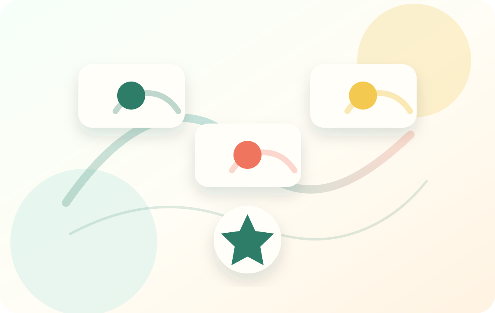

Define the crush and moment
Users can capture who is involved, the relationship history, exact options, timing, emotional risk, and what outcome they want to protect.
Our mission
Syntrae's mission is to help people think through sensitive crush choices: name the person, compare exact messages or timing, replay likely replies, and see which response patterns return before one real action is taken.

What the mission means
Sensitive conversations often happen with incomplete signals. Syntrae gives users a private way to organize crush context, let Syntrae Test vary tone, timing, pressure, and privacy, and review recurring response patterns before choosing one message or conversation path.
Users can capture who is involved, the relationship history, exact options, timing, emotional risk, and what outcome they want to protect.
Syntrae should show likely positive, negative, and unclear replies clearly, without pretending that crush outcomes are guaranteed.
The goal is not to outsource judgment. The goal is to see which message or timing feels respectful and performs more reliably for that specific person.
What we are building toward
Syntrae is built for moments like asking where things are going, choosing when to open a deeper conversation, or deciding how direct a message should be. Recurrence turns those moments into response patterns people can review before they act.